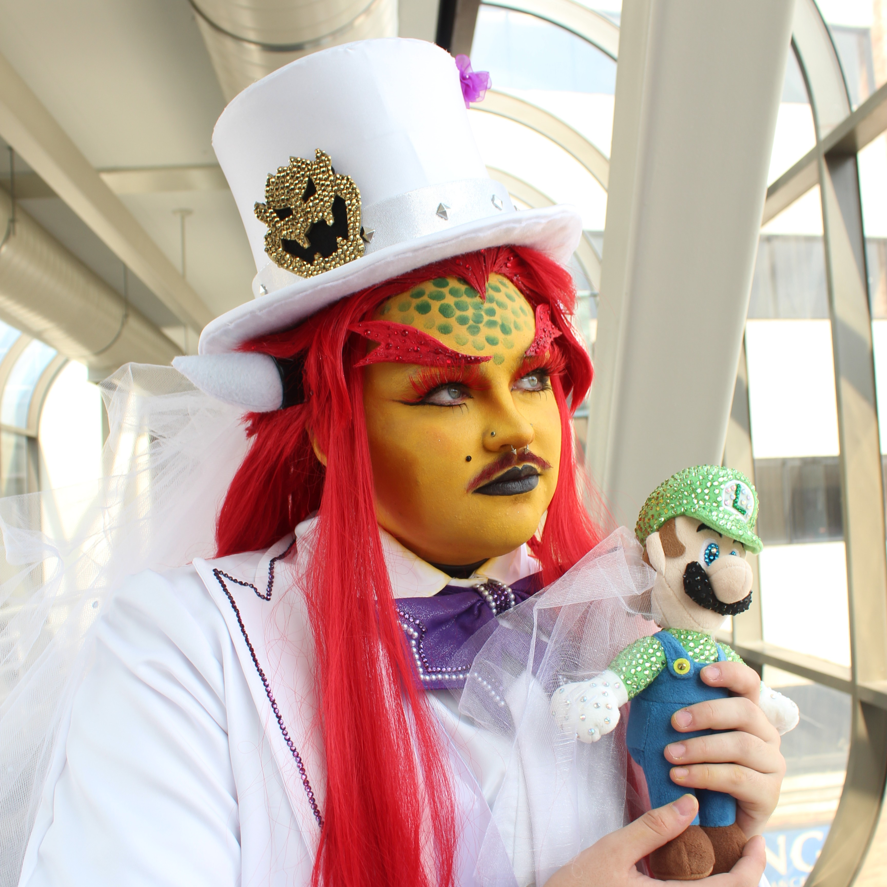
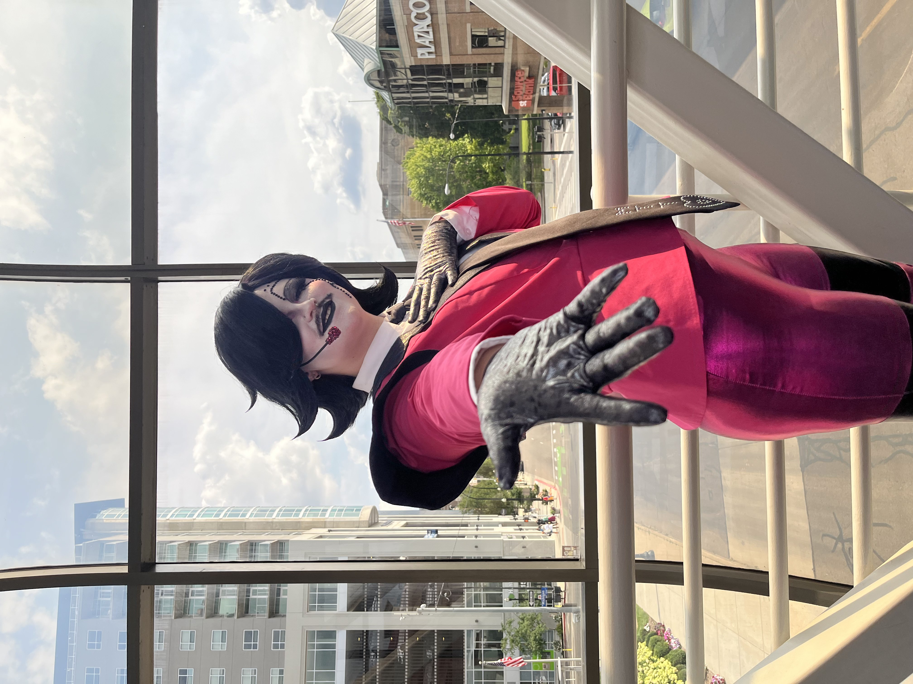

About Me!
Andy (Dandy Andy Cos) is a cosplayer and creator from West Michigan. He's carved out a unique niche for himself in the local cosplay scene, melding the worlds of cosplay and drag together into one sparkly, shiny, spectacle. He takes great pride in clean, professional work with immense attention to detail, and is currently competing at the Masters level in craftsmanship.


His cosplay journey began in 2023 where he won his first craftsmanship award at Otaku Detroit's Summer Bash, and ever since then he's been hooked. In the last few years, he's built a diverse portfolio of projects, from all kinds of media. Video games, anime, danmei, you name it. In 2024, he took a big leap and put his first cosplay drag performance on stage at Dokidokon. Since then, he's been searching for ways to outdo himself and get bigger, better, and bolder with each project. As of 2026, he holds seven craftsmanship awards and two performance awards.
Outside of cosplay, Andy is a full-time student working towards his Bachelor of Science in Writing at Grand Valley State University. You can occasionally catch him on stage at his local community theater, where he continues to hone his performance skills. He also enjoys knitting, tap dancing, and watching Bob's Burgers for the hundreth time.
Awards
- Gerudo Armor Link - Breath of the Wild
- Otaku Detroit Summer Bash 2023
- Best Craftsmanship
- Barbarian Armor Link - Breath of the Wild
- Kogancon 2024
- Best in Show
- Dio Brando - JoJo's Bizarre Adventure
- Dokidokon Winterfest 2023
- Best Prop
- Sweetheart - Omori
- Kogancon 2024
- 2nd Place Overall
- Mettaton - Undertale
- Dokidokon 2024
- Performance Runner-Up
- Mo Ran - The Dumb Husky and his White Cat Shizun
- Isshocon 2025
- Best Overall Craftsmanship
- Wedding Bowser - Super Mario Odyssey
- Dokidokon 2025
- Best in Show
- Luo Binghe - The Scum Villain's Self Saving System
- Kogancon 2025
- Best in Show